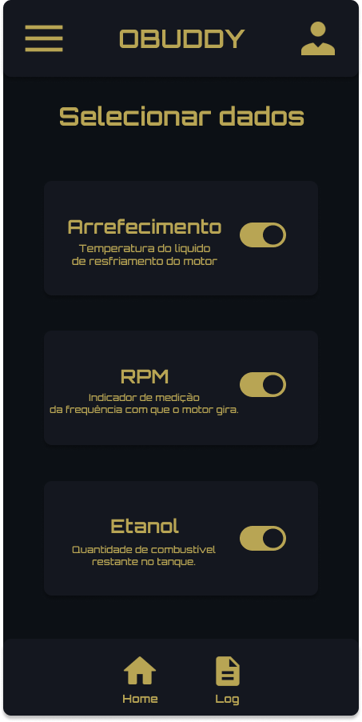
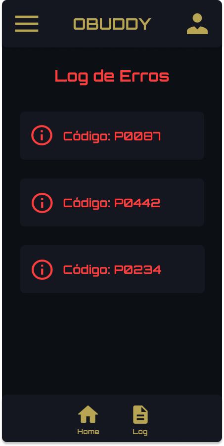

Obuddy



POTENCIALIZE A SUA JORNADA.
Chega de adivinhação quando se trata da saúde do seu carro. Nosso aplicativo utiliza o protocolo OBD-II para oferecer diagnósticos precisos e em tempo real diretamente para o seu smartphone. Descubra problemas antes que eles se tornem caros reparos. Monitore o desempenho do seu veículo, veja em detalhes como resolver quaisquer erros e receba alertas personalizados. Mantenha seu carro funcionando suavemente e com segurança. Baixe agora e simplifique sua vida automotiva.